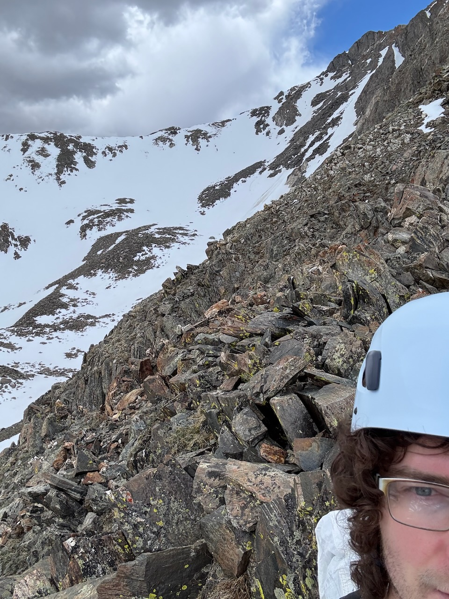

Jacob Campbell
Postdoctoral Fellow I am a postdoc at NYU Abu Dhabi, working with Marwa Banna in the high-dimensional probability group. From 2023 to 2026, I held the position of Whyburn Research Associate and Lecturer at the University of Virginia, where my faculty mentor was Ben Hayes. I completed my PhD in 2023 at the University of Waterloo, under the supervision of Alexandru Nica. I am originally from Ottawa, Canada. I am interested in free probability, random matrices, and their connections with representation theory, combinatorics, and operator algebras. Links |
 |